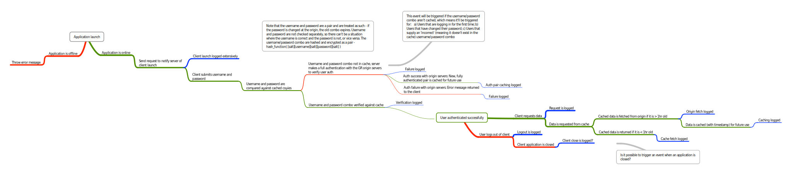

Welcome to the Student Utility Developer Site.
This is a small site hosted on Github Pages which acts as a front for Developers working with the Student Utility repository.
$ cd your_repo_root/Crescent-School-Student-Utility
$ git fetch origin
$ git checkout master
About
The Crescent School Student Utility is a mobile (iOS, Android, Blackberry, Windows Phone, HP WebOS, and Symbian) application for Crescent School students which is designed, developed, and maintained by Crescent students. We built it to make our lives easier when we're trying to access information which we use every day. From students, for students.
Become a developer
So you think you've got what it takes to handle the flak from 800 students complaining about something you made for them? Excellent. We're looking for designers, developers, and just generally anybody who wants to make their own lives easier by making our lives easier. If you're interested in helping out, or have any other questions or concerns, flip us an email and we'll happily respond.
How it works
This is the flow chart of client-server-origin interactions in SVG format.
You probably can't read that, so click on it to open it up in a new tab at full size.
Authors and Contributors
So far, the Crescent School Student Utility has bene designed, built, and maintained entirely by Jonathan Libby (@Libbux) and Matthew Cheung.